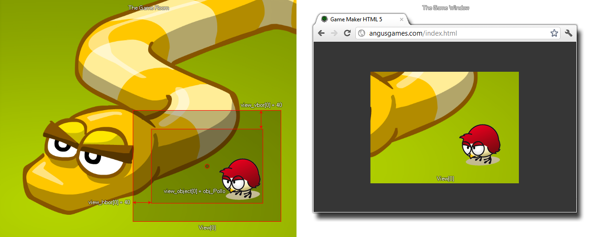

view_vborder[0...7]
Returns: Real
This variable sets the vertical border width for view following.
You can set the view to follow a specific instance using the
view_object variable (or in
the room
editor) and by setting this value you can control how near or
far from the edge of the view the instance needs to be before the
view will move. For example, if you have a view height of 240 and
set the vertical view border to 120, the object that the view must
follow will always be in the middle of the view. However, make the
vertical view border 0 and the instance must be right on the edge
of the view before it will move.

NOTE: if you are not setting the x and y position of the
view manually, the view never leaves the boundaries of the room.
This means that when the view reaches the edge of a room, the
horizontal and vertical borders are ignored and the instance will
move freely within the view.
view_hborder[0] = view_wview[0] / 2;
view_vborder[0] = view_hview[0] / 2;
The above code will set the view follow borders to half the width and height of the view, effectively forcing the view to always be centered on the follow object.